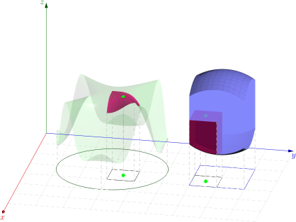

But how to program calculus
Learned a fast algorithm of calculating the multiple integral by using the Monte Carlo method. Before that, the basic limit definition that underpins calculus appears to be an direct way to program the integral.